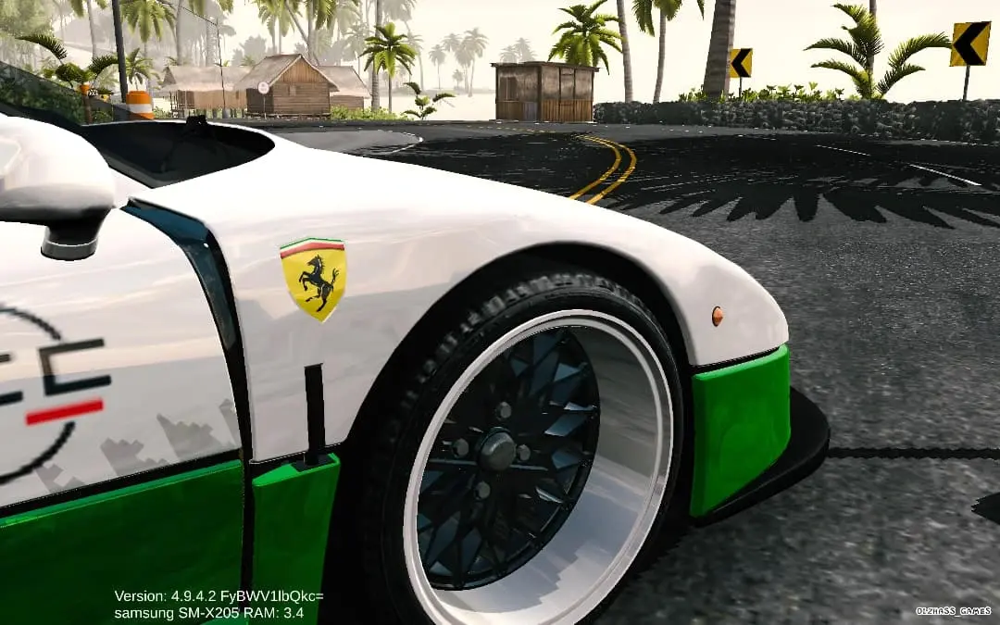
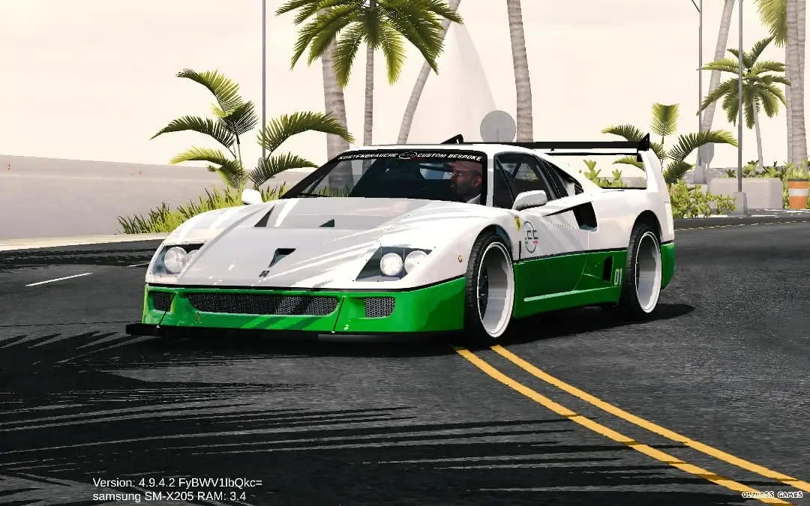
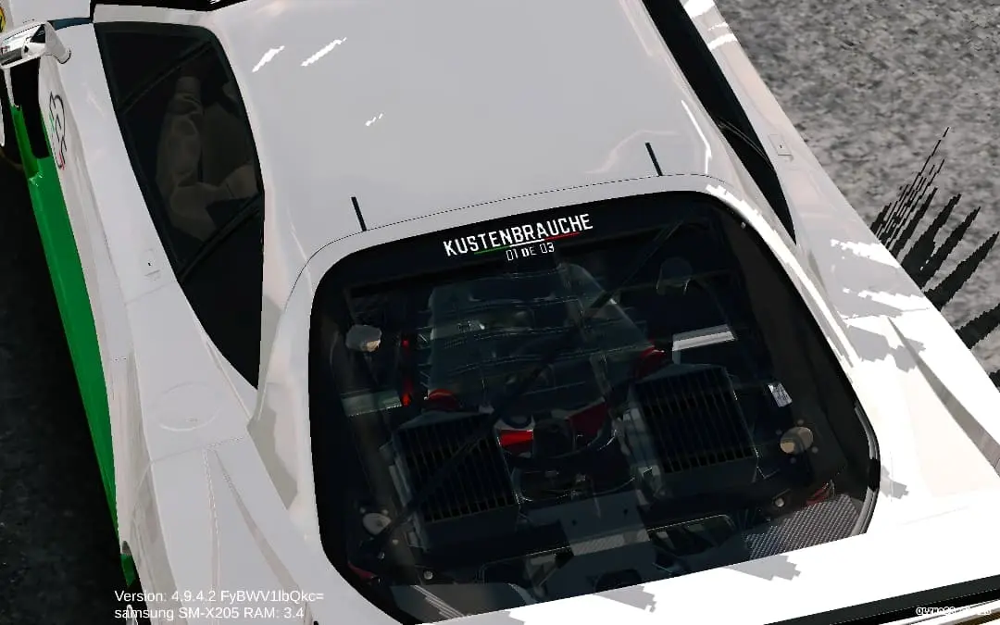
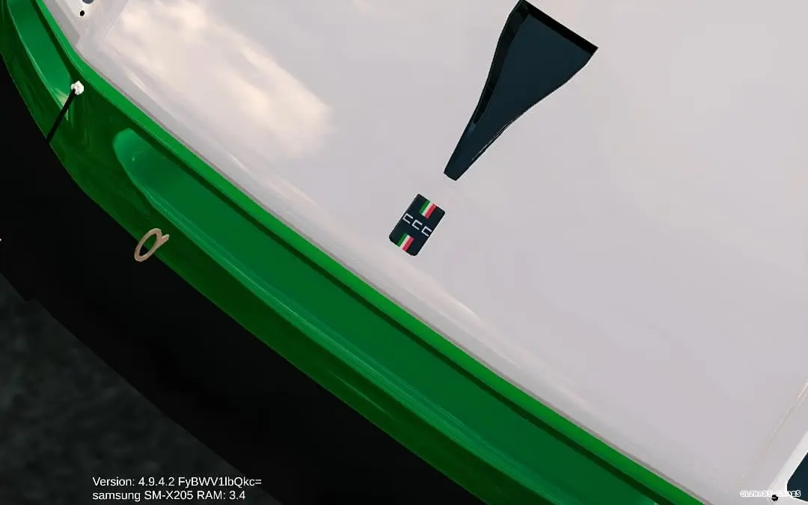

Design statement — A quick one-line intro about this image and what it highlights.

Detail / Feature — Short explanation for the next image.

Interior — Short copy describing the interior shot.

Track / Performance — Short copy for the final wide image.

Performance
High-performance package: race-ready setup and premium materials.
Engine
V8 Twin-turbo
Power
700 HP
Top Speed
350 km/h
0–100
2.8 s
Torque
780 Nm
Transmission
7-speed DCT